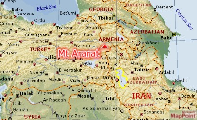
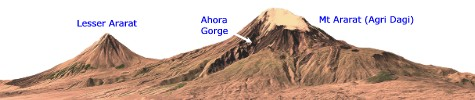
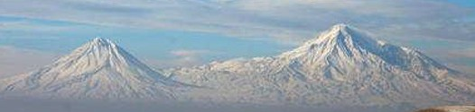
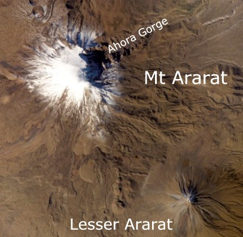
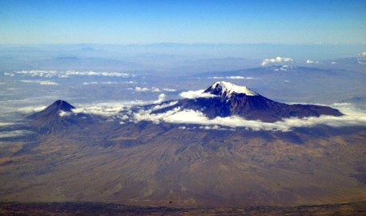

Is the Ark on Ararat?
Copyright Tim Lovett Dec 2005 | Home | Menu
Did they ever find it? Are they still looking? What do we really know?
|
 Mt
Ararat and the search for Noah's Ark. People claim to have seen it,
others allege the photos have been lost. Stories involve everything from
the Russian military to the CIA. Mt
Ararat and the search for Noah's Ark. People claim to have seen it,
others allege the photos have been lost. Stories involve everything from
the Russian military to the CIA.
But what evidence
do we have today?
How well
does Mt Ararat
fit with the Bible?
> See
More here
|

|
Why Mt Ararat?
Mt Ararat, one of the tallest mountains in the middle east3, dominates the skyline at
the junction of four nations. Many believe this was the resting
place of Noah's Ark. The Armenians to the north revere the mountain
as the origin of the Armenian people, or Hay, believing they are direct descendents of Noah's family. 1

Mt Ararat at the extreme east of Turkey, overlooks Armenia to the North East
and Iran to the South East. Image from MapPoint. MSN
MapPoint Map
Currently, there is no remnant or photograph of Noah's Ark recognized as
legitimate by the major creationist organizations such as AiG, ICR, CRS.
While www.WorldwideFlood.com
concentrates on the engineering aspects of Noah's Ark, the issue of Mt Ararat
is a very popular question. It is a common belief that Noah's Ark (or remains of it)
have been found on Mt
Ararat or somewhere "over there'. This idea comes from a combination of
sources, namely;
- Popular 1976 Hollywood movie "In Search of Noah's Ark."
aired on NBC on May 2 and December 24, 1977 which showed a mysterious object
jutting out of the snow. Later expeditions proved this was simply a rock.
- Books such as The Quest for Noah's Ark, Montgomery 1972, The Ark
on Ararat, Lahaye & Morris 1976.
- Media attention over Ararat expeditions searching the mountain on foot or using
aerial and satellite photography, even ground penetrating radar. (1960's to present)
- Confusion over the boat shaped formation spotted by Turkish cartographer
Durupinar and publicized by Life magazine on Sept 5 1960. When investigated,
it turned out to be a natural geological feature and the site was abandoned.
Decades later, the idea was resurrected by Ron Wyatt and still promoted by
some, but the evidence falls far short of the claims.8
- Sun International Pictures aired an updated version of its 1976 film. CBS
aired "The Incredible Discovery of Noah's Ark," on February 20,
1993, which resulted in plenty of publicity (of the negative sort) in the
Jammal "eyewitness" hoax.
- More recently; Daniel McGivern's satellite photos taken during the extreme 2003 summer by Digital
Globe: McGivern had
planned a major expedition to Ararat but was refused by Turkish authorities citing security concerns. Meanwhile,
Ararat expeditions by Media Evangelism of Hong Kong culminated in Oct 2004
with the claim; "a wooden structure had been found on Mount Ararat at a height of 4,200
meters." They released a DVD "The Days of Noah" in April 2005.
(Cantonese with English subtitles).
11
- June 2006. Media coverage of Bob Cornuke's Iranian location for Noah's Ark
- with photos of a rock outcrop that look like a wood beams. These were
quickly discounted by creationist geologist Tas Walker. Cornuke has
previously claimed to have found the true Mount Sinai, the place of Paul's
shipwreck off the coast of Malta, and the location of the Ark of the
Covenant! See Iran summary here,
problems with Cornuke's find here.
Needless to say, the average observer has formed a vague idea that something
was nearly found but for some governmental conspiracy, or a lack of political stability
preventing further study. This is not correct. In the early 1980's Col. James
Irwin combed most of the mountain on foot, then surveyed and photographed the
mountain from various aircraft. In 1988 (Willis) and 1989 (Aaron/Garbe/Corbin),
Ground Penetrating Radar (GPR) technology was used on Mount Ararat to look under
some of the the ice.
Still no Ark.
Well known Ark hunter Dr John Morris (ICR president) considers Ararat a
closed case unless a strong new lead arose. To date, the Noah's Ark
"finds" are either geological formations that happens to look a bit
boat-like, or rumors about secret photos and cover-ups. This is not
evidence.
Could Mt Ararat be hiding Noah's Ark?
|
| For |
Neutral |
Against |
- It has the name "Ararat"
- 'Eyewitness' accounts usually involve Mt Ararat -
particularly modern ones. 9
- It is one of the few places that could have hidden Noah's Ark in ice for 4500 years. 6
- It is an example of a high point, allowing the Ark to land first
before the "Tops of the mountains were seen". Gen 8:5
|
- Ancient maps and accounts do not all match with Mt Ararat as a
landing site. 7
- There is at least 100 years between the Flood and the tower
of Babel, which would allow distant travel.
- God may want to reveal the Ark as a 'sign' in the last
days. However, no specific scripture points to the unveiling
of Noah's Ark.
- It is not in the expected location, east of Shinar or Babylon. Gen 11:2.
However, this migration occurred at least a century after the
flood.
- The ancient region that extended around Armenia (Arartu) had a
similar name to the Biblical "mountains of RRT". 4
|
- The ark was wood, and may have been used as a source of fuel
or building materials. Wood rarely survives this length of time.
- "Lack of evidence that this mountain was ever under water. 5
- After leaving the Ark the animals have to make their way
down a fresh 5165m volcano considered a challenge to modern
climbers. 2
- There is one other mountain (lesser Ararat) but
"mountaintops" are quite distant. Strange that Noah reports
distant ranges without first mentioning Lesser Ararat's appearance.
- God does not normally save icons. The Ark of the Covenant has been
lost, Solomon's Bronze Sea was broken up, the Temple destroyed. Even
Jesus himself prophesied against the second temple. It seems out of
character for God to miraculously preserve Noah's Ark.
|

Mt Ararat from Armenia (North East). The
Armenians call it "Masis"
From the East to Babylon.
Gen. 11:2, And it came to pass, as they journeyed from the east, that they
found a plain in the land of Shinar, and they dwelt there.
The phrase “from the east” is a translation of MI-KÈDEM in the
Hebrew Text. MI is ‘from’ or ‘coming from', KÈDEM is ‘front
of the east’.
Of the locations described in Genesis 11, the most reliable location is
probably Babylon. The name is almost certainly
derived from the Tower of Babel. The "land of Shinar" is less
obvious, but is generally considered to be in the Mesopotamian valley.
Taking the Babel/Babylon link as the strongest clue, the early descendents
came from the east of this area. This may appear to exclude Mt Ararat in Turkey, which
is directly north. However, the Babel incident is more than a century after the
flood. Even a single year would be enough time to travel across the middle east,
so this prevents any pinpoint location for Noah's descendents.
However, East of Babylon are the Zagros mountains of Iran. These are
a dramatically eroded sedimentary formation that could fit the idea of early
post flood erosion as the soft sediment is uplifted. The Zagros range has many
excellent examples of wind gaps and water gaps 10, and other evidences of anomalous erosion patterns
best explained by the receding floodwaters. However, it
is far less likely Noah's Ark could survive for thousands of years in these
mountains than hidden in the ice of Ararat. (Assuming it found a nice niche away
from the grinding glacial flow of ice down the mountain - a dubious assumption
in itself)

Satellite view of Mt Ararat in summer. (Image NASA)
Photos - Nothing yet.
Analysis of the latest QuickBird images (Digital Globe) is headed by Farouk
El-Baz, research professor and founding director of Boston University's Center
for Remote Sensing. Excerpt from SPACE.com:
El-Baz first gained world attention for his work on the
Apollo program. He served as secretary of the lunar landing site selection
committee, chairman of the astronaut training group, and principal investigator
for visual observations and photography.
... He has been a pioneer in
developing the field of remote sensing and is offering his expertise to what's
truly resident on Mt. Ararat.
"There is absolutely enough hearsay…enough discussion about the topic
to warrant looking into this, to see whether there is something tangible or
not," El-Baz told SPACE.com
... El-Baz himself remains true to his training,
waiting for scientific data to become available and help unveil the true nature
of the Ararat object.
"There is absolutely nothing in all the pictures that we have seen up to
now that is questionable in my mind. I can explain each and everything as a
natural snow bank…a shadow. There is nothing," El-Baz said. But given the
interest and the historical nature of such a find, the search is worth
conducting, he added. "From all the points of view, there is definitely
enough in this to warrant spending time to resolve the issue, one way or the
other. So I don't consider it a waste of time," El-Baz said.

Stunning aerial view of Mt Ararat from Armenia, September 14,
2004. Used with permission Brian J. McMorrow http://www.pbase.com/bmcmorrow/image/34205613
Start Searching...
Naturally speaking, it is more likely that Noah's Ark never survived 4500 years of exposure.
The following specialist website covers the search for Noah's Ark in five prospective
areas;
Home
| Overview | ArcImaging
| FAQ's | Links
| Products | E-mail
| News
Urartu | Mt.
Ararat | Mt. Cudi | Durupinar
| Iran
Interactive Map
The Google Map window below is centered on Mt Ararat (39.7N,44.3E). Click on
"Satellite" to show detailed terrain due to the limited map detail in
this area. You can drag on map or use the navigation controls on the left.
A marker also locates the Durupinar site (39.44N,44.235E), which is in the
foothills of Mt Ararat. This is considered a geological formation created by mud
flow (obviously due to its proximity with the snow-capped and volcanic Ararat).
Similar formations exist in the area.
References
1. The modern republic of
Armenia covers only the northeastern portion of an area historically inhabited
by Armenians, whose ancestors settled in the area of Mount Ararat, in
present-day Turkey, in the late 3000s BC. http://www.arab-world-information.com/armenia.htm
This date is agreeable, but does not guarantee Mt Ararat as the correct landing
site. Claiming ancestry from Noah's Ark logical but not unique, the Bible makes
it clear we are all descendents of Noah's family. Gen 9:19 These three were the sons of Noah, and from these
the whole earth was populated. Return to text
2. Assuming at Noah's time that climactic changes had not yet produced
snow and ice on Mt Ararat, the terrain is still extremely dangerous. Morris J.
D., Noah's Ark and the Ararat Adventure, Master Books, 1988.
Many times while
climbing we were nearly hit by falling rocks. Some of these rocks were boulders
bigger than a car. At times, hundreds of rocks would start rolling down the
mountain as fast as a runaway truck. They would easily crush anyone they hit.
Even the smaller rocks could kill. Some climbers have been seriously injured,
and others even killed on Mt Ararat.
Alternatively, Mt Ararat may have been covered with loose rocks only
recently. However, an easy route down Mt Ararat would be special
pleading. Return to text
3. Mount El’brus (5633m) further north in the
Caucasus and Mount Damavand (5604m) near Tehran in Iran, are taller than Mount
Ararat. Return to text
4. Ararat is not Hebrew but is probably derived
from the Assyrian word “Urartu,” meaning highest land. Return to text
5. "There seems to be almost a total lack of
evidence that this mountain was ever under water." Crouse B., The Landing
Place, TJ 15(3), 2001. p10 and ref 7 (Crouse argues Burdick's pillow lava
claim is unsubstantiated). Return to text
6. The permanent icecap on Mt Ararat is
approximately 44km2 and up 60-90m thick in places. The ice is glacial, so it is
continuously moving which would tend to tear the Ark to pieces. Return to text
7. Crouse (2001) argues that ancient accounts favor
Cud Dagh as a landing site. Northern Iran is also indicated in some ancient
maps. The earliest reference that refers specifically to the Turkish Mt Ararat (Agri
Dagi) as the resting place of Noah's Ark is in the 13th century. Return to text
8. Assessment of Ron Wyatt's claims regarding the
Durupinar site; Snelling,
A., Special report: Amazing ‘Ark’ exposé. Creation 14(4):26–38
September 1992 Return to text
9. Morris,
J., That boat-shaped rock … is it Noah’s Ark?, Creation 12(4):16–19 September 1990
Having studied Mount Ararat and the surrounding area, one of intense geologic
and volcanic turmoil, I have concluded that a wooden structure such as the Ark
would not be likely to survive if it had landed there. The only reason to be
looking at all is that eyewitnesses claim to have seen the Ark. Return to text
10. Water gaps refer to rivers that cut through a
mountain range when it would be expected to go around it. Wind gaps are water
gaps that subsequently lost flow to another route, leaving the valley high
and dry. These are best explained as occurring during the receding stages of the
Flood where a mountain range acted as a dam, but was breached in certain places.
A dominant breach would leave others as wind gaps. The Zagros Mountains are one
of the best examples of these Deluge-like erosion patterns, an indicator that it
may have been one of the first areas to uplift. Return to text
11. Report of 2004 discovery by Media Evangelism
Limited;
http://www.media.org.hk/noahsark/asp/apply1_eng.asp
Return to text
.
www.worldwideflood.com